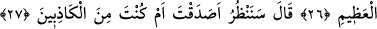
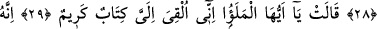
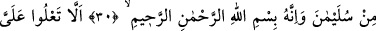
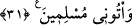

TESLİMİYET GÖSTERİP
BANA GELİN
25. (Şeytan böyle yapmış ki) göklerde ve yerde gizleneni açığa çıkaran,
gizlediğinizi ve açıkladığınızı bilen Allâh’a secde etmesinler.
26. (Halbuki) büyük Arş’ın sâhibi olan Allah’tan başka ilah yoktur.
27. (Süleyman hüdhüde) dedi ki: “Doğru mu söyledin, yoksa yalancılardan mısın,
bakacağız.”
28. Şu mektubumu götür, onu kendilerine ver, sonra onlardan biraz çekil de, ne
sonuca varacaklarına bak.
29. “Ey ileri gelenler, bana çok önemli bir mektup bırakıldı” dedi.
30. “Mektup Süleyman’dandır, Rahmân ve Rahîm olan Allâh’ın adıyla
(başlamakta)dır.”
31. “Bana baş kaldırmayın, teslimiyet gösterip bana gelin, diye (yazmaktadır).”
Şeytan onları doğru yoldan alıkoymuş ki “göklerde ve yerde gizleneni açığa
çıkaran,” yâni kar, yağmur, bitki, su ve benzeri ne olursa olsun o ikisinde depo edilmiş
ve gizli ne varsa ortaya çıkaran, kalplerde “gizlediğinizi ve” dillerinizle ve
organlarınızla “açıkladığınızı bilen Allah’a secde etmesinler.”
Allah’a secdeyi terk ettikleri için bu, onlar için bir yermedir. Onun için bu âyetler
okunup tamamlanınca secde etmek vâcibdir.
“Açıkladığınızı” ifâdesinin zikredilmesi, ilim dâiresini genişletmek ve ilâhî ilme
nisbetle gizlenenlerin ve açığa vurulanların eşit olduğuna dikkat çekmek içindir.
Ona bir zerre bile gizli değildir
Gizli ve aşikâr Onun katında birdir